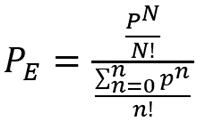

Semana 11
Sistemas de informática administrativa (SIA)
Es el conjunto de elementos que examina y recupera los datos provenientes del ambiente que captura, filtra datos a partir de las transacciones y operaciones efectuadas dentro de la administración. En el manual de un sistema administrativo deben figurar las responsabilidades y los roles que corresponden a cada puesto dentro de la organización y a cada unidad administrativa. Es importante resaltar que la existencia de un sistema como éste beneficia ampliamente el funcionamiento de una compañía, y facilita considerablemente tareas tales como las auditorías, así como el control del trabajo de cada empleado.
En otras palabras, es una aplicación informática cuya función básica es la de actuar como catálogo de información sobre tramitación administrativa, incluyéndose procedimientos administrativos y servicios tanto dirigidos al ciudadano como propios de las Administraciones Públicas.
Tipos de sistemas
Nivel estratégico: Permite que la alta dirección de las empresas pueda analizar y monitorear tendencias, patrones, metas y objetivos estratégicos de la organización. Su función principal es compaginar los cambios del entorno externo con la capacidad organizacional existente. Por ejemplo: Sistemas de apoyo a Ejecutivos.
Nivel administrativo: Es la administración de una organización. Incluye todos los aspectos de la supervisión y revisión de las operaciones del negocio, así como las áreas relacionadas, que incluyen las finanzas, contabilidad, marketing y gestión de proyectos. Por ejemplo: Un sistema de control de reubicación que informe los costos totales de la mudanza, búsqueda de vivienda y financiamiento de vivienda para empleados de todas las divisiones de la empresa y notifique cualquier costo actual que exceda los presupuestos.
Nivel de conocimiento: Son sistemas de información basados en conocimiento que apoyan la creación, organización y difusión del conocimiento empresarial a los empleados y administradores a través de la compañía. El propósito de estos sistemas es ayudar a las empresas comerciales a integrar el nuevo conocimiento en los negocios y ayudar a la organización a controlar el flujo del trabajo de oficina. Los sistemas a nivel del conocimiento, especialmente en forma de estaciones de trabajo y sistemas de oficina, están entre las aplicaciones de crecimiento más rápido en los negocios actuales.
Nivel operativo: Es la base de la pirámide y abarca a toda la fuerza laboral responsable de hacer que todos los procesos sucedan dentro de una empresa. La productividad de los empleados es lo que garantiza el éxito del flujo de trabajo. No solo hablamos de capacidad de producción, sino de todos los aspectos de la efectividad y efectividad del equipo, como el correcto uso de los recursos, seguimiento de objetivos y medición de procesos.
El objetivo principal de los sistemas a este nivel es responder a las preguntas de rutina y seguir el flujo de las transacciones a través de la organización.
Estructura de un sistema de información administrativo
Entradas: Datos obtenidos de fuentes internas y externas; la fase de entrada es permanente porque los datos nuevos se suman continuamente al sistema cuando se realizan las transacciones.
Procesamiento: fase durante la cual los datos obtenidos son transformados, organizados y archivados; la mejor manera de procesar datos, actualmente, es por medio de las computadoras.
Salidas: Relatos, diagramas, cuadros, resúmenes escritos compilados y producidos durante la fase de procesamiento; una vez que las salidas son utilizadas para tomar decisiones estas deben ser producidas en un formato que permita al usuario final tener un acceso rápido.
Retroalimentación: Mecanismo de verificación y ajuste, que ayuda a los administradores a determinar qué información generada es necesaria; los informes pueden ser comparados con pronósticos, patrones y otros medios para medir.
4 ventajas
Permitir a las organizaciones mantener un mejor control administrativo y operativo que permita gestionar mejor los recursos, el tiempo, y la atención al cliente para agilizar cada uno de estos procesos.
Disponibilidad de mayor y mejor información para los usuarios en tiempo real.
Permite comparar resultados alcanzados con los objetivos programados, con fines de evaluación y control.
Disminuye errores, tiempo y recursos superfluos.
4 desventajas
El tiempo que pueda tomar su implementación.
Problemas técnicos, si no se hace un estudio adecuado, como fallas de hardware o de software o funciones implementadas inadecuadamente para apoyar ciertas actividades de la organización.
Resistencia al cambiar por parte de los administradores.
Falta de costumbre al utilizar un sistema para soportar el proceso de toma de decisiones.
Modelado de decisión de objetivos únicos y múltiples
Son procedimientos que ayudan a analizar los problemas que existen en cualquier sistema y nos guían a tomar las mejores decisiones para la solución de estos.
Modelos de objetivos y atributos múltiples
Modelos de Objetivo Único: Hace énfasis en la multidimensionalidad la cual contrasta con los modelos de objetivo único
Modelos de costo-beneficio: Se trata de obtener los mayores y mejores resultados al menor esfuerzo invertido, tanto por una buena técnica como por una buena motivación.
Modelos y análisis de costo-eficacia: Es un instrumento para determinar si los costos de una actividad pueden estar o no justificados por los resultados de un proyecto o programa en términos de eficiencia, es decir si será redituable y si se obtendrán los beneficios esperados.
3 métodos de programación a multiobjetivo
Modelos de sistemas dinámicos: Son un tipo especial de modelo de estimulación, que muestra la relación entre los estados y flujos de un sistema. Puede utilizarse para analizar cambios en los niveles de las salidas del sistema, debido a fluctuaciones en las entradas.
Algoritmo de Klee: Es una herramienta de análisis, utilizada para la priorización de causas, se basa en ponderaciones y calificaciones dadas tanto por los analistas del problema como por los representantes de la empresa o proceso. Por medio de un algoritmo de Klee, se pretende descartar la o las variables de mayor criticidad que actualmente están afectando el óptimo funcionamiento del proceso.
Modelo de planeación de recursos hidráulicos: Las funciones de utilidad proporcionan la información necesaria para clasificar las alternativas y sus consecuencias. El supuesto subyacente a esos modelos es que los autores de decisiones son “racionales” y buscan maximizar su utilidad esperada.
Procedimiento general para comparar de atributos múltiples complejas
Árbol de decisiones: Es un diagrama en forma de árbol que muestra la probabilidad estadística o determina un curso de acción. Muestra a los analistas y, a los que toman las decisiones, qué pasos deben tomar y cómo las diferentes elecciones podrían afectar todo el proceso. Todo ello soportado en datos. Este método se usa para realizar un análisis que consiste en delinear de forma gráfica los posibles resultados, costos y consecuencias de una decisión compleja.
Puntuación de las alternativas: Se dan las puntuaciones de los distintos aspectos recogidos, todos aquellos que son susceptibles de ser medidos cualitativa o cuantitativamente.
Establecimiento de pesos de factores: Es un momento delicado, con frecuencia hay contar con otros miembros del equipo de diseño. Quizás la forma más efectiva de asignar estos valores de peso es analizar cuál es el factor que se considera más importante y a éste se le asigna el valor máximo de 10, y el peso de cada uno de los otros factores se asigna en relación con éste.
3 modelos distintos
Modelos de intercambio: Que proporcionan métodos por los cuales pueden compararse y evaluarse situaciones de medios y fines. Con respecto a los lenguajes HDL, no existe mayor problema ya que éstos son realmente archivos de texto ASCII. El inconveniente aparece cuando hablamos de esquemas de circuitos, máscaras o rutados. Una de las primeras soluciones fue la de trabajar con imágenes jpeg de las mismas y no con los propios diseños y si bien este mecanismo es funcional tiene la clara desventaja de que para poder trabajar sobre el diseño se lo debe transcribir por completo.
Modelos de juicio o evaluación: Por modelo se entiende a toda representación ideal a escala diferente de la entidad implicada, mediante la cual se puede entender o explicar de mejor manera el objeto en sí. Igualmente puede considerarse como una abstracción teórica de una realidad. los cuales se integra indicaciones e información en juicios globales o compuestos
Modelos de sistemas de investigación: Describen como puede validarse la verdad, en el contexto de un método de razonamiento particular.
Semana 12
Sistemas Complejos.
Es la unión de diversos elementos, que tiene diferentes objetivos particulares, pero que en sinergia, trabajan para cumplir objetivos generales, estos sistemas pueden ser tangibles e intangibles, dependiendo del contexto. Funcionan a través de información o estímulos recibidos, que es procesado de manera particular y en conjunto, para dar un resultado general.
También puede ser Un grupo de cosas, vivas o inanimadas, capaces de interactuar entre ellas dando lugar a un determinado comportamiento. Y aquí viene la parte difícil: un sistema no complejo puede ser enteramente entendido a través del estudio de sus unidades individuales.
Al contrario, para entender el comportamiento de un sistema complejo se requiere algo más que la simple suma de la contribución de cada elemento. Un sistema puede ser físico o concreto (una computadora, un televisor, un humano) o puede ser abstracto o conceptual (un software). Cada sistema existe dentro de otro más grande, por lo tanto, un sistema puede estar formado por subsistemas y partes, y a la vez puede ser parte de un supersistema.
4 tipos de sistemas
Sistemas abstractos: Compuestos por conceptos, planes, hipótesis e ideas. Muchas veces solo existen en el pensamiento de las personas. Es el software.
Sistemas aislados: Son aquellos sistemas en los que no se produce intercambio de materia ni energía.
Sistemas simples: Estos no cuentan con subsistemas, lo que permite identificar fácilmente a los elementos constitutivos de los mismos.
Sistemas artificiales: Se caracterizan por ser producto de la creación humana, por lo que dependen de la presencia de otros para poder existir.
3 propiedades de sistemas complejos
Conectados: Estas relaciones se pueden representar en forma de redes donde cada agente es uno de los nodos. Frecuentemente, estas redes presentan una configuración tal que permite que la información fluya en ellas muy rápidamente.
Retroalimentación: Es un proceso mediante el cual dos sistemas que están interactuando modifican su comportamiento de acuerdo con las respuestas que uno recibe del otro.
Adaptativos: Estos sistemas son capaces de adaptarse a su entorno, sin una dirección centralizada “inteligente”. Por ejemplo: la evolución darwiniana en la que los seres vivos se adaptan a los cambios del entorno o como una colonia de hormigas es capaz de regular la temperatura de su hormiguero.
Concepto Multidisciplinar
Se denomina equipo multidisciplinario o multidisciplinar a aquel formado por un grupo de personas con diferentes formaciones académicas, especializaciones y experiencias profesionales, que trabajan en conjunto ya sea de forma habitual o durante un tiempo determinado para resolver un problema complejo común afrontándolo desde distintos ángulos.
3 ventajas de un equipo multidisciplinario
Mejora el aprendizaje de sus miembros: El trabajar codo con codo con profesionales de otras especializaciones contribuye a mejorar el nivel de conocimientos de todos ellos individualmente. Esto enriquece al profesional y le hace más valioso. Además, contribuye a una mejor apreciación de los talentos del compañero, a conocer sus dificultades y a ser consciente de lo que aportar al trabajo de equipo.
Aumenta la diversidad de perspectivas desde las que abordar soluciones: Cuando se trata de la resolución de cuestiones y problemas complejos. Al afrontar estos desde distintos ámbitos y con visiones muy diferentes facilita encontrar soluciones eficaces. Además, dado que los miembros de un equipo de este tipo tienen perspectivas y ángulos de solución diferentes, sus argumentaciones acostumbran a ser más sólidas y se basan en argumentos más completos. El trabajo dentro de un equipo multidisciplinar facilita la toma de resoluciones reales y efectivas.
Facilita el reparto del trabajo: Las habilidades, talentos y preparación de cada miembro del equipo son claras. Y por ello el reparto del trabajo es más sencillo. Además, también evita que este sea generador de conflictos.
Inconvenientes
Uno de los inconvenientes que puede presentar un equipo multidisciplinar es que, al fomentar una mayor comunicación dentro del propio equipo, las relaciones evolucionen a un término que esté más cercano a lo personal que a lo profesional.
Semana 13
1. Ejemplos de sistemas Complejos.
Un gran ejemplo de un sistema complejo es la tierra. La tierra está compuesta por varios sistemas que la describen:

Flujo térmico.
Ondas elásticas.
Humedad.
Campo gravitatorio.
Geodinámica.
Campo magnético.
Todos estos sistemas los hemos estudiado muy bien, pero aún no podemos comprender como interactúan y hacen evolucionar al sistema (Tierra). Todavía hay mucha información oculta en esas interrelaciones de sistemas.
Otros sistemas complejos son:
Los ecosistemas.
El tiempo atmosférico.
Las ciudades.
Los seres vivos.
Las sociedades.
Etc.
2. Modelos de trafico
La teoría de trafico consiste en la aplicación de modelas matemáticos para explicar entre la capacidad de una red de comunicación, la demanda de servicios de usuario le imponga y el nivel de calidad que la red pueda alcanzar. Como dicha demanda es naturaleza estadística, se puede representar mediante algún proceso estocástico adecuado, con la que se constituyen diferentes Modelos de Trafico. Dado un modelo de trafico particular, el desempeño de la red puede ser predecible, en principio, aplicando herramientas adecuadas proporcionadas principalmente por la Teoría de Procesos Estáticos y otros recursos matemáticos. Los resultados de dicho análisis de desempeño son los puntos principales de partida para el diseño de mecanismo de control de red en aspecto tan variados como el control de admisión, el control de flujo, el control de congestión, el control de la memoria en las colas, etc.
Un ejemplo tradicional y supremamente exitoso es el de las redes telefónicas, en las que la relación tráfico-desempeño se describe mediante una expresión cerrada y compacta, la fórmula B de Erlang, con la que se calcula la probabilidad de que una llamada sea rechazada, ρB, cuando hay N circuitos sobre los que los usuarios imponen una intensidad de tráfico ρa, definida como el producto de la tasa de llegada de llamadas por la duración promedio de cada llamada:
Leer mas

Semana 14
1. Sistemas dinámicos
Es un sistema que va evolucionando con el tiempo. Los sistemas físicos en situaciones no estacionarias son ejemplos de sistemas dinámicos, pero también existen modelos económicos, matemáticos y de otros tipos que son sistemas abstractos y, a su vez, sistemas dinámicos. El comportamiento de dicho estado se puede caracterizar determinado los limites del sistema, los elementos y sus relaciones; así podemos elaborar modelos que buscan representar la estructura del mismo sistema.
Ejemplo de sistema dinámico:
Un claro ejemplo sería un corral de gallinas que se reproduce de tal forma que este año la cantidad de gallinas es XK, el próximo año seria X(K+1). De esta manera podemos poner nombres a la cantidad de gallinas que habrá cada año, así: año inicial X0, primer año X1, segundo año X2,…………., …………, año k Xk.
Tipos de sistemas dinámicos:
Los sistemas dinámicos se dividen en sistemas discretos en el tiempo y continuos en el tiempo:
Un sistema dinámico se dice discreto si el tiempo se mide en pequeños lapsos; estos son modelados como relaciones recursivas, tal como la ecuación logística:
donde t denota los pasos discretos del tiempo y x es la variable que cambia con este.
El sistema dinámico continuo es expresado como una ecuación diferencial ordinaria: por ejemplo:
Donde x es la variable que cambia con el tiempo t. La variable cambiante x es normalmente un número real.
3. Determinismo débil y fuerte
Determinismo:
Es una doctrina filosófica que sostiene que todo acotamiento físico, incluso el pensamiento y las acciones humanas, esta causalmente determinados por la irrompible cadena causa-consecuencia y, por tanto, el estado actual “determina” en algún sentido el futuro.
Determinismo débil:
Sostiene que es la probabilidad lo que está determinado por los hechos presentes, o que existe una fuerte correlación entre el estado presente y los estados futuros, aunque admitiendo la influencia de sucesos esencialmente aleatorios e impredecibles.
Determinismo fuerte:
Sostiene que no existen sucesos genuinamente aleatorios o azarosos y que, en general, el futuro es potencialmente predecible a partir del presente. El pasado también podría ser “predecible” si conocemos perfectamente una situación puntual de la cadena de causalidad.
Semana 15
1. Redes complejas
Una red compleja se refiere a una red (modelada como grafo) que posee ciertas propiedades estadísticas y topológicas no triviales que no ocurren en redes simples. Distribuciones de grado que siguen leyes de potencia, estructuras jerárquicas, estructuras comunitarias, longitud entre cualesquiera dos entes del sistema corto, o alta cohesividad local.
Un ejemplo de redes con tales características en la naturaleza son las redes sociales, las neuronas, las redes de tráfico aéreo y las redes tróficas, etc.